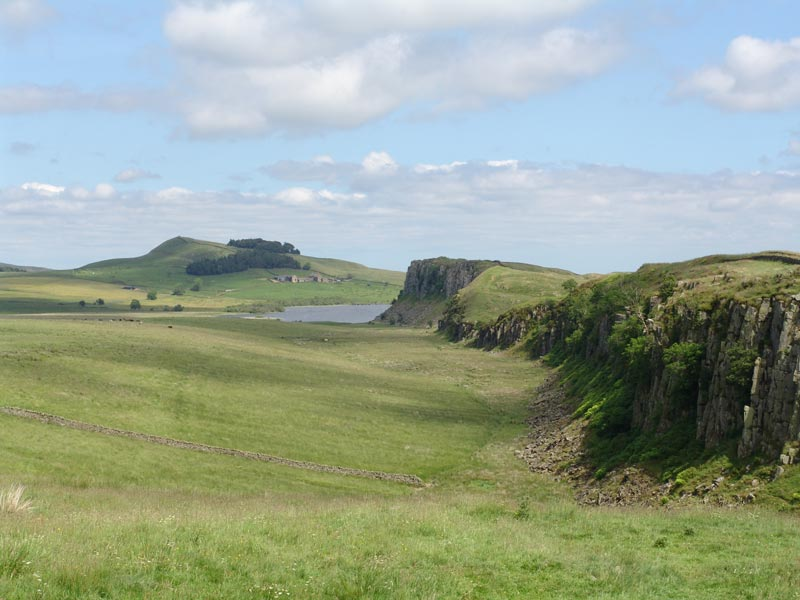
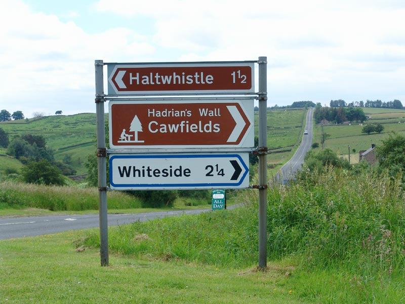
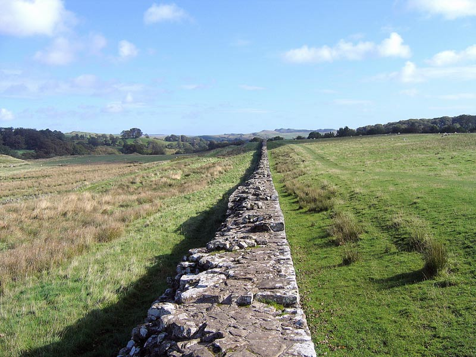
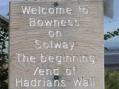
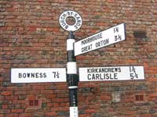

Hadrians Wall Walks and other walks in the region
 |
There are few places in England more trodden by holiday walkers than the Hadrians Wall Path which stretches from Bowness-on-Solway, Cumbria, to Tyneside in Northumbria. The trail follows the 84 miles of Hadrians Wall, constructed during the time of the Roman Occupation and completed in AD122. Landscapes, seascapes and cloudscapes present a panorama which has few equals and has remained largely unchanged over centuries. This area of enduring beauty, once known as the "Debateable Lands", fiercely fought over by local clans and home to marauding Border Reivers created one of the most violent regions in Britain. Some law and order was eventually restored during the reign of James 1, but by this time many Reivers and families had wearied of the constant warfare and sought a new life in the Americas and Australia. Neil Armstrong, the first man to walk the moon, and former President Richard Nixon having the same surname as some of those settlers may well be descendants. Readers can check their own surnames against those of the Reivers by visiting www.hadrians-wall.org or www.reiversguide.co.uk |
 |
The Hadrians Wall Path is not a leisurely stroll; it requires careful preparation if the complete length is to be attempted. May to October is the better time when the ground is drier. Allow 6-7 days and research and reserve accommodation well in advance. Try and make a note of shops, cash points and public transport facilities along the route. The Hadrians Wall Bus Service A122 operates between Carlisle and Newcastle from Easter – November stopping at towns and villages on the way. There are some sections which provide easy access for those less well abled and the Walk is also linked to several other appealing shorter walks. |
 |
Cyclists are not forgotten. Hadrians Cycleway begins at Glannaventa Roman Bath in Ravenglass and follows the line of Hadrians Wall for much of the ride to Arbeia Roman Fort in the east of the country. It's a well way-marked route largely over gravel and tarmac surfaces and minor roads. As with the walkers, it's advisable to plan and reserve accommodation well in advance. Visit ‘Discover Lakeland’ with friendly and informative guided tours of the Lake District, Hadrian’s Wall and Cumbria. - www.discoverlakeland.co.uk |
The Hadrian's Wall Walk Route Information
| Bowness on Solway There is an air of imperturbability about this small community of brightly painted stone cottages flanking narrow streets, one pub and a 12th C church which was partly built with stone taken from Hadrians Wall. It occupies a position within an area designated as one of Outstanding Natural Beauty with long distance views across the Solway to the Scottish mainland. The nearby saltmarsh and wet grasslands of Campfield Marsh RSPB where cattle quietly graze are home to a varied mix of native wildlife. Viewing points and hides with wheelchair access are available. Bowness on Solway is not only the start and/or finish point of the Hadrians Wall Walk, it is a perfect longer term holiday destination. Accommodation both in the village and the surrounding areas provide high standards of comfort, good value for money, and many with rooms overlooking the beauty that is the Solway Coast. Bus Services. The AD122 operates a service between Carlisle and Newcastle, and Stagecoach operate the all-year-round 93 service between Bowness and Carlisle.. Post Office. The Post Office is housed within a private dwelling half way along the main street. With effect from November 2nd 2009, it will be open on Mondays only from 9am – 5pm. Until then it opens Monday and Thursday from 9am to Noon and 1pm to 3pm. A sign placed on the pavement during opening hours will show the location. |
 |
| Port Carlisle A long straight narrow road without walls or hedging is an opportunity for fine views as it follows the coastline from Bowness on Solway to this scattering of houses, a well kept bowling green, and a comfortable pub with offerings of bar snacks and a selection of real ales, wines and spirits. It occupies a peaceful setting of uninterrupted coastal views. A worthy travellers rest. |
|
| Burgh by Sands Burgh stands within the Solway Coast area of Outstanding Natural Beauty and the Hadrians Wall World Heritage Site. Close by are the villages of Moorhouse and Thurstonfield where it is said Bonnie Prince Charlie visited during his siege of Carlisle in 1745. To the west are the hamlets of Dykesfield and Longburgh. Burgh by Sands is a peaceful community far removed from its days as a centre of Border warfare when as the lowest fordable point on the Solway, armies crossed and recrossed during the 300 years of vicious conflicts. John Stagg, Cumbrian dialect poet and known as “The Blind Bard” was born in the village. He lost his sight in a childhood accident and spent his life writing of the local people their dialect and customs. Burgh by Sands is a convenient stop-over on the walk. The coastal area teems with wildlife and is renowned for birdwatching opportunities. There are chances of otter sightings, and, very occasionally, small whales. Accommodation in and around is especially walker friendly. The local pub provides warmth, a good menu prepared from local produce, bar snacks and a good selection of drinks. The Post Office, across the road from the pub opens twice a week on Mondays and Thursdays from 9am to midday and 3pm to 5pm. Here you may purchase from a selection of home-made jams and chutneys. Cash Point within the shop. |
 |
Greyhound Inn, (Burgh by Sands) |
Walkers will find the doors open for food and drink from 10a.m. Tuesday to Thursday inclusive during the summer months. |
Burgh to Carlisle Carlisle Irthington Brampton Gilsland Hadrian's Wall, Northumbria Haltwhistle Bardon Mill, Haydon Bridge, Newbrough and Fourstones are small villages with accommodations close to the wall as it continues eastwards in the direction of Hexham. Hexham Corbridge Heddon on the Wall Wallsend Hadrians Wall Passport Historic Structures on route Short Walks in the region Please note that dogs are permitted on walks marked with a dog symbol but must be kept on a lead. |